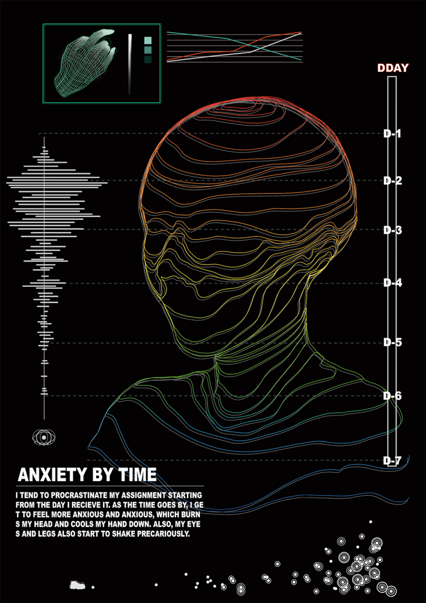

Project
Contact
@juliaxxalsk
Designer
Mapping Time
황주원
ANXIETY BY TIME
Category
-
과제를 하기 위해 책상에 앉아있기는 하지만, 아이디어를 떠올리다가 막힐 경우 그것을 미루고 휴식을 취하곤 한다.
하지만 시간이 흐를수록 마음 속엔 서서히 불안감이 차오르게 되는데, 이처럼 마 감이 다가옴에 따라 차오르는 불안감과
그것에 따른 각 신체 부위별 변화를 보여주는 포스터를 제작 했다.
